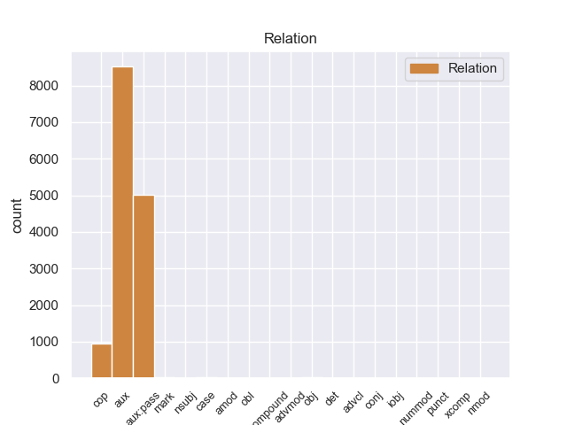
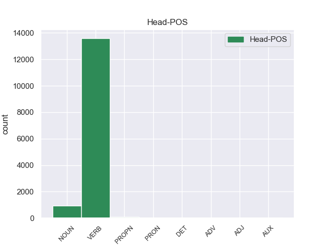
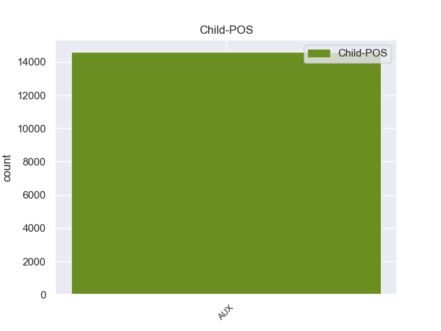

Distribution of features within this leaf



Agreement Rules sorted by frequency.
When the dependent token is None
1 लिहाजा _ _ _ _ 0 _ _ _
2 , _ _ _ _ 0 _ _ _
3 अब _ _ _ _ 0 _ _ _
4 वक्त _ _ _ _ 0 _ _ _
5 आ आ VERB VM Gender=Masc|Number=Sing|Person=3|Voice=Act 0 _ _ _
6 गया जा AUX VAUX Aspect=Perf|Gender=Masc|Number=Sing|VerbForm=Part 5 aux _ ChunkId=VGF|ChunkType=child|Tam=yA1|Translit=gayā|Vib=या१
7 है _ _ _ _ 0 _ _ _
8 कि _ _ _ _ 0 _ _ _
9 पूरी _ _ _ _ 0 _ _ _
10 दुनिया _ _ _ _ 0 _ _ _
11 के _ _ _ _ 0 _ _ _
12 अमन _ _ _ _ 0 _ _ _
13 पसंद _ _ _ _ 0 _ _ _
14 देश _ _ _ _ 0 _ _ _
15 अमेरिका _ _ _ _ 0 _ _ _
16 को _ _ _ _ 0 _ _ _
17 नीतियों _ _ _ _ 0 _ _ _
18 में _ _ _ _ 0 _ _ _
19 बदलाव _ _ _ _ 0 _ _ _
20 करने _ _ _ _ 0 _ _ _
21 का _ _ _ _ 0 _ _ _
22 दबाव _ _ _ _ 0 _ _ _
23 बनाए _ _ _ _ 0 _ _ _
24 । _ _ _ _ 0 _ _ _
Disagree Examples:
1 रोबिनसिंह _ _ _ _ 0 _ _ _
2 अपने _ _ _ _ 0 _ _ _
3 जमाने _ _ _ _ 0 _ _ _
4 के _ _ _ _ 0 _ _ _
5 धाकड़ _ _ _ _ 0 _ _ _
6 हरफनमौला हरफनमौला VERB VM Gender=Masc|Number=Sing|Person=3|Polite=Form|Voice=Act 0 _ _ _
7 खिलाड़ी खिलाडी AUX VAUX Aspect=Perf|Gender=Fem|Number=Sing|VerbForm=Part 6 aux _ _
8 थे _ _ _ _ 0 _ _ _
9 । _ _ _ _ 0 _ _ _
1 ढहते ढह AUX VAUX Aspect=Imp|Gender=Masc|Number=Plur|Person=3|VerbForm=Part 19 mark _ _
2 घर _ _ _ _ 0 _ _ _
3 . _ _ _ _ 0 _ _ _
4 चबूतरे _ _ _ _ 0 _ _ _
5 सब _ _ _ _ 0 _ _ _
6 कांपने _ _ _ _ 0 _ _ _
7 लगते _ _ _ _ 0 _ _ _
8 थे _ _ _ _ 0 _ _ _
9 तब _ _ _ _ 0 _ _ _
10 वहां _ _ _ _ 0 _ _ _
11 मीठे _ _ _ _ 0 _ _ _
12 शहद _ _ _ _ 0 _ _ _
13 के _ _ _ _ 0 _ _ _
14 टपकने _ _ _ _ 0 _ _ _
15 की _ _ _ _ 0 _ _ _
16 प्रतीक्षा _ _ _ _ 0 _ _ _
17 उसे _ _ _ _ 0 _ _ _
18 बरबस _ _ _ _ 0 _ _ _
19 हो हो VERB VM Gender=Fem|Number=Sing|Voice=Act 0 _ _ _
20 जाती _ _ _ _ 0 _ _ _
21 थी _ _ _ _ 0 _ _ _
22 . _ _ _ _ 0 _ _ _
23 मथते _ _ _ _ 0 _ _ _
24 मनोबल _ _ _ _ 0 _ _ _
25 के _ _ _ _ 0 _ _ _
26 साथ _ _ _ _ 0 _ _ _
27 ही _ _ _ _ 0 _ _ _
28 वैजंती _ _ _ _ 0 _ _ _
29 ने _ _ _ _ 0 _ _ _
30 लेख _ _ _ _ 0 _ _ _
31 लिखने _ _ _ _ 0 _ _ _
32 प्रारंभ _ _ _ _ 0 _ _ _
33 किये _ _ _ _ 0 _ _ _
34 . _ _ _ _ 0 _ _ _
35 . _ _ _ _ 0 _ _ _
36 और _ _ _ _ 0 _ _ _
37 उसे _ _ _ _ 0 _ _ _
38 कई _ _ _ _ 0 _ _ _
39 पत्रिकाओं _ _ _ _ 0 _ _ _
40 में _ _ _ _ 0 _ _ _
41 कालम _ _ _ _ 0 _ _ _
42 लिखने _ _ _ _ 0 _ _ _
43 का _ _ _ _ 0 _ _ _
44 आमंत्रण _ _ _ _ 0 _ _ _
45 मिलने _ _ _ _ 0 _ _ _
46 लगा _ _ _ _ 0 _ _ _
47 . _ _ _ _ 0 _ _ _
48 एक _ _ _ _ 0 _ _ _
49 बार _ _ _ _ 0 _ _ _
50 वह _ _ _ _ 0 _ _ _
51 जब _ _ _ _ 0 _ _ _
52 लिखने _ _ _ _ 0 _ _ _
53 में _ _ _ _ 0 _ _ _
54 डूब _ _ _ _ 0 _ _ _
55 - _ _ _ _ 0 _ _ _
56 सी _ _ _ _ 0 _ _ _
57 गयी _ _ _ _ 0 _ _ _
58 थी _ _ _ _ 0 _ _ _
59 विष्णु _ _ _ _ 0 _ _ _
60 निर्मल _ _ _ _ 0 _ _ _
61 के _ _ _ _ 0 _ _ _
62 सामने _ _ _ _ 0 _ _ _
63 साइकिल _ _ _ _ 0 _ _ _
64 चलाते _ _ _ _ 0 _ _ _
65 - _ _ _ _ 0 _ _ _
66 चलाते _ _ _ _ 0 _ _ _
67 गिर _ _ _ _ 0 _ _ _
68 गया _ _ _ _ 0 _ _ _
69 . _ _ _ _ 0 _ _ _
70 . _ _ _ _ 0 _ _ _
1 शिरःशूल _ _ _ _ 0 _ _ _
2 , _ _ _ _ 0 _ _ _
3 भ्रम _ _ _ _ 0 _ _ _
4 होंठ _ _ _ _ 0 _ _ _
5 सुखकर _ _ _ _ 0 _ _ _
6 खुश्की _ _ _ _ 0 _ _ _
7 होना _ _ _ _ 0 _ _ _
8 , _ _ _ _ 0 _ _ _
9 उत्साह _ _ _ _ 0 _ _ _
10 की _ _ _ _ 0 _ _ _
11 कमी _ _ _ _ 0 _ _ _
12 रहना _ _ _ _ 0 _ _ _
13 भी _ _ _ _ 0 _ _ _
14 इन _ _ _ _ 0 _ _ _
15 औषधियों _ _ _ _ 0 _ _ _
16 केविष _ _ _ _ 0 _ _ _
17 प्रभाव _ _ _ _ 0 _ _ _
18 के _ _ _ _ 0 _ _ _
19 ही _ _ _ _ 0 _ _ _
20 प्रतिफल _ _ _ _ 0 _ _ _
21 हैं _ _ _ _ 0 _ _ _
22 . _ _ _ _ 0 _ _ _
23 सम्पूर्ण _ _ _ _ 0 _ _ _
24 देह _ _ _ _ 0 _ _ _
25 लाल _ _ _ _ 0 _ _ _
26 त्वचायुक्त _ _ _ _ 0 _ _ _
27 हो _ _ _ _ 0 _ _ _
28 जाता _ _ _ _ 0 _ _ _
29 है _ _ _ _ 0 _ _ _
30 तथादाने _ _ _ _ 0 _ _ _
31 ( _ _ _ _ 0 _ _ _
32 लाल _ _ _ _ 0 _ _ _
33 ) _ _ _ _ 0 _ _ _
34 निकल _ _ _ _ 0 _ _ _
35 आते _ _ _ _ 0 _ _ _
36 हैं _ _ _ _ 0 _ _ _
37 . _ _ _ _ 0 _ _ _
38 अल्प _ _ _ _ 0 _ _ _
39 क्षमता _ _ _ _ 0 _ _ _
40 ( _ _ _ _ 0 _ _ _
41 अल्प _ _ _ _ 0 _ _ _
42 रक्तता _ _ _ _ 0 _ _ _
43 ) _ _ _ _ 0 _ _ _
44 वाले _ _ _ _ 0 _ _ _
45 रोगी _ _ _ _ 0 _ _ _
46 को _ _ _ _ 0 _ _ _
47 यह _ _ _ _ 0 _ _ _
48 औषधि _ _ _ _ 0 _ _ _
49 नहींदेनी _ _ _ _ 0 _ _ _
50 चाहिए _ _ _ _ 0 _ _ _
51 . _ _ _ _ 0 _ _ _
52 कभी _ _ _ _ 0 _ _ _
53 कभी _ _ _ _ 0 _ _ _
54 औषधि _ _ _ _ 0 _ _ _
55 सेवन _ _ _ _ 0 _ _ _
56 के _ _ _ _ 0 _ _ _
57 बाद _ _ _ _ 0 _ _ _
58 ही _ _ _ _ 0 _ _ _
59 कंपकपी _ _ _ _ 0 _ _ _
60 छूटकर _ _ _ _ 0 _ _ _
61 ज्वर _ _ _ _ 0 _ _ _
62 हो _ _ _ _ 0 _ _ _
63 जाता _ _ _ _ 0 _ _ _
64 है _ _ _ _ 0 _ _ _
65 . _ _ _ _ 0 _ _ _
66 कभीबाद _ _ _ _ 0 _ _ _
67 में _ _ _ _ 0 _ _ _
68 भी _ _ _ _ 0 _ _ _
69 तथा _ _ _ _ 0 _ _ _
70 कभी _ _ _ _ 0 _ _ _
71 लाल _ _ _ _ 0 _ _ _
72 चकत्ते _ _ _ _ 0 _ _ _
73 बनकर _ _ _ _ 0 _ _ _
74 ज्वर _ _ _ _ 0 _ _ _
75 हो _ _ _ _ 0 _ _ _
76 जाता _ _ _ _ 0 _ _ _
77 है _ _ _ _ 0 _ _ _
78 . _ _ _ _ 0 _ _ _
79 यह _ _ _ _ 0 _ _ _
80 औषधि _ _ _ _ 0 _ _ _
81 वृक्कों _ _ _ _ 0 _ _ _
82 पर _ _ _ _ 0 _ _ _
83 भी _ _ _ _ 0 _ _ _
84 अपना _ _ _ _ 0 _ _ _
85 विषैला _ _ _ _ 0 _ _ _
86 प्रभाव _ _ _ _ 0 _ _ _
87 छोड़ छोड़ VERB VM Gender=Masc|Voice=Act 0 _ _ _
88 देती दे AUX VAUX Aspect=Imp|Gender=Fem|Number=Sing|VerbForm=Part 87 aux _ _
89 है _ _ _ _ 0 _ _ _
90 . _ _ _ _ 0 _ _ _
91 इसके _ _ _ _ 0 _ _ _
92 कण _ _ _ _ 0 _ _ _
93 यत्रतत्रमूत्र _ _ _ _ 0 _ _ _
94 प्रणाली _ _ _ _ 0 _ _ _
95 में _ _ _ _ 0 _ _ _
96 जम _ _ _ _ 0 _ _ _
97 जाते _ _ _ _ 0 _ _ _
98 हैं _ _ _ _ 0 _ _ _
99 जो _ _ _ _ 0 _ _ _
100 अधिक _ _ _ _ 0 _ _ _
101 द्रव _ _ _ _ 0 _ _ _
102 देने _ _ _ _ 0 _ _ _
103 के _ _ _ _ 0 _ _ _
104 बाद _ _ _ _ 0 _ _ _
105 ही _ _ _ _ 0 _ _ _
106 बाहर _ _ _ _ 0 _ _ _
107 निकलतेहैं _ _ _ _ 0 _ _ _
108 . _ _ _ _ 0 _ _ _
109 कभी _ _ _ _ 0 _ _ _
110 मूत्र _ _ _ _ 0 _ _ _
111 कष्ट _ _ _ _ 0 _ _ _
112 से _ _ _ _ 0 _ _ _
113 निकलता _ _ _ _ 0 _ _ _
114 है _ _ _ _ 0 _ _ _
115 , _ _ _ _ 0 _ _ _
116 तो _ _ _ _ 0 _ _ _
117 कभी _ _ _ _ 0 _ _ _
118 मूत्र _ _ _ _ 0 _ _ _
119 निस्सरण _ _ _ _ 0 _ _ _
120 रुक _ _ _ _ 0 _ _ _
121 जाता _ _ _ _ 0 _ _ _
122 है _ _ _ _ 0 _ _ _
123 . _ _ _ _ 0 _ _ _
1 दल _ _ _ _ 0 _ _ _
2 ( _ _ _ _ 0 _ _ _
3 छोन्स्टिटुटिओनलिस्ट्स् _ _ _ _ 0 _ _ _
4 ) _ _ _ _ 0 _ _ _
5 उसका _ _ _ _ 0 _ _ _
6 पक्षकरता _ _ _ _ 0 _ _ _
7 था _ _ _ _ 0 _ _ _
8 , _ _ _ _ 0 _ _ _
9 परन्तु _ _ _ _ 0 _ _ _
10 पेरिस _ _ _ _ 0 _ _ _
11 और _ _ _ _ 0 _ _ _
12 कुछ _ _ _ _ 0 _ _ _
13 अन्य _ _ _ _ 0 _ _ _
14 नगरों _ _ _ _ 0 _ _ _
15 में _ _ _ _ 0 _ _ _
16 उसका _ _ _ _ 0 _ _ _
17 प्रभाव _ _ _ _ 0 _ _ _
18 नाममात्र _ _ _ _ 0 _ _ _
19 को _ _ _ _ 0 _ _ _
20 थाऔर _ _ _ _ 0 _ _ _
21 इस _ _ _ _ 0 _ _ _
22 दल _ _ _ _ 0 _ _ _
23 के _ _ _ _ 0 _ _ _
24 अनुयायियों _ _ _ _ 0 _ _ _
25 को _ _ _ _ 0 _ _ _
26 राजनीति _ _ _ _ 0 _ _ _
27 के _ _ _ _ 0 _ _ _
28 हथकंड़ो _ _ _ _ 0 _ _ _
29 का _ _ _ _ 0 _ _ _
30 कोई _ _ _ _ 0 _ _ _
31 अनुभव _ _ _ _ 0 _ _ _
32 भी _ _ _ _ 0 _ _ _
33 न _ _ _ _ 0 _ _ _
34 था _ _ _ _ 0 _ _ _
35 . _ _ _ _ 0 _ _ _
36 विधानसभा _ _ _ _ 0 _ _ _
37 में _ _ _ _ 0 _ _ _
38 तो _ _ _ _ 0 _ _ _
39 वे _ _ _ _ 0 _ _ _
40 अधिक _ _ _ _ 0 _ _ _
41 संख्या संख्या NOUN NN Case=Acc|Gender=Fem|Number=Sing|Person=3 0 _ _ _
42 में _ _ _ _ 0 _ _ _
43 थे था AUX VM Gender=Masc|Mood=Ind|Number=Plur|Tense=Past|VerbForm=Fin|Voice=Act 41 cop _ _
44 , _ _ _ _ 0 _ _ _
1 जैसेसंध्या _ _ _ _ 0 _ _ _
2 की _ _ _ _ 0 _ _ _
3 बेला _ _ _ _ 0 _ _ _
4 में _ _ _ _ 0 _ _ _
5 सुहागिनों _ _ _ _ 0 _ _ _
6 का _ _ _ _ 0 _ _ _
7 सारा _ _ _ _ 0 _ _ _
8 सिंदूर _ _ _ _ 0 _ _ _
9 उस _ _ _ _ 0 _ _ _
10 पानी _ _ _ _ 0 _ _ _
11 में _ _ _ _ 0 _ _ _
12 झलक झलक VERB VM Gender=Fem|Number=Sing|Voice=Act 0 _ _ _
13 उठता उठता AUX VAUX Aspect=Imp|Gender=Masc|Number=Sing|VerbForm=Part 12 aux _ _
14 हो _ _ _ _ 0 _ _ _
15 . _ _ _ _ 0 _ _ _
16 जहांतक _ _ _ _ 0 _ _ _
17 नजर _ _ _ _ 0 _ _ _
18 जाती _ _ _ _ 0 _ _ _
19 थी _ _ _ _ 0 _ _ _
20 , _ _ _ _ 0 _ _ _
21 वहां _ _ _ _ 0 _ _ _
22 रेत _ _ _ _ 0 _ _ _
23 ही _ _ _ _ 0 _ _ _
24 रेत _ _ _ _ 0 _ _ _
25 था _ _ _ _ 0 _ _ _
26 . _ _ _ _ 0 _ _ _
27 और _ _ _ _ 0 _ _ _
28 फिर _ _ _ _ 0 _ _ _
29 समुद्र _ _ _ _ 0 _ _ _
30 की _ _ _ _ 0 _ _ _
31 शांत _ _ _ _ 0 _ _ _
32 और _ _ _ _ 0 _ _ _
33 गंभीर _ _ _ _ 0 _ _ _
34 आवाजथी _ _ _ _ 0 _ _ _
35 . _ _ _ _ 0 _ _ _
36 दूसरे _ _ _ _ 0 _ _ _
37 दिन _ _ _ _ 0 _ _ _
38 शाम _ _ _ _ 0 _ _ _
39 को _ _ _ _ 0 _ _ _
40 जब _ _ _ _ 0 _ _ _
41 नंदिनी _ _ _ _ 0 _ _ _
42 मुझे _ _ _ _ 0 _ _ _
43 पहली _ _ _ _ 0 _ _ _
44 बार _ _ _ _ 0 _ _ _
45 उस _ _ _ _ 0 _ _ _
46 समुद्र _ _ _ _ 0 _ _ _
47 - _ _ _ _ 0 _ _ _
48 तट _ _ _ _ 0 _ _ _
49 पर _ _ _ _ 0 _ _ _
50 ले _ _ _ _ 0 _ _ _
51 गयी _ _ _ _ 0 _ _ _
52 थी _ _ _ _ 0 _ _ _
53 , _ _ _ _ 0 _ _ _
54 तोमैं _ _ _ _ 0 _ _ _
55 वह _ _ _ _ 0 _ _ _
56 दृश्य _ _ _ _ 0 _ _ _
57 पहली _ _ _ _ 0 _ _ _
58 बार _ _ _ _ 0 _ _ _
59 देखकर _ _ _ _ 0 _ _ _
60 दंग _ _ _ _ 0 _ _ _
61 रह _ _ _ _ 0 _ _ _
62 गया _ _ _ _ 0 _ _ _
63 था _ _ _ _ 0 _ _ _
64 . _ _ _ _ 0 _ _ _
65 थियासाफिकल _ _ _ _ 0 _ _ _
66 सोसाइटी _ _ _ _ 0 _ _ _
67 के _ _ _ _ 0 _ _ _
68 पीछेवाला _ _ _ _ 0 _ _ _
69 रास्ता _ _ _ _ 0 _ _ _
70 लिये _ _ _ _ 0 _ _ _
71 , _ _ _ _ 0 _ _ _
72 नदी _ _ _ _ 0 _ _ _
73 - _ _ _ _ 0 _ _ _
74 किनारे _ _ _ _ 0 _ _ _
75 चलते _ _ _ _ 0 _ _ _
76 हुए _ _ _ _ 0 _ _ _
77 हम _ _ _ _ 0 _ _ _
78 धीरे _ _ _ _ 0 _ _ _
79 - _ _ _ _ 0 _ _ _
80 धीरे _ _ _ _ 0 _ _ _
81 समुद्र _ _ _ _ 0 _ _ _
82 की _ _ _ _ 0 _ _ _
83 ओर _ _ _ _ 0 _ _ _
84 बढ़ _ _ _ _ 0 _ _ _
85 रहेथे _ _ _ _ 0 _ _ _
86 . _ _ _ _ 0 _ _ _
87 नदी _ _ _ _ 0 _ _ _
88 में _ _ _ _ 0 _ _ _
89 पानी _ _ _ _ 0 _ _ _
90 कम _ _ _ _ 0 _ _ _
91 था _ _ _ _ 0 _ _ _
92 . _ _ _ _ 0 _ _ _
93 उसका _ _ _ _ 0 _ _ _
94 बड़ा _ _ _ _ 0 _ _ _
95 हिस्सा _ _ _ _ 0 _ _ _
96 सूखा _ _ _ _ 0 _ _ _
97 था _ _ _ _ 0 _ _ _
98 . _ _ _ _ 0 _ _ _
99 चारों _ _ _ _ 0 _ _ _
100 ओर _ _ _ _ 0 _ _ _
101 गुलाबी _ _ _ _ 0 _ _ _
102 धूपअलस _ _ _ _ 0 _ _ _
103 - _ _ _ _ 0 _ _ _
104 भाव _ _ _ _ 0 _ _ _
105 से _ _ _ _ 0 _ _ _
106 लेटी _ _ _ _ 0 _ _ _
107 हुई _ _ _ _ 0 _ _ _
108 थी _ _ _ _ 0 _ _ _
109 . _ _ _ _ 0 _ _ _
110 गुलाब _ _ _ _ 0 _ _ _
111 की _ _ _ _ 0 _ _ _
112 ताजा _ _ _ _ 0 _ _ _
113 पंखुडियों _ _ _ _ 0 _ _ _
114 की _ _ _ _ 0 _ _ _
115 तरह _ _ _ _ 0 _ _ _
116 रोशनी _ _ _ _ 0 _ _ _
117 यहां _ _ _ _ 0 _ _ _
118 - _ _ _ _ 0 _ _ _
119 वहांछिटकी _ _ _ _ 0 _ _ _
120 हुई _ _ _ _ 0 _ _ _
121 थी _ _ _ _ 0 _ _ _
122 . _ _ _ _ 0 _ _ _
123 उस _ _ _ _ 0 _ _ _
124 अजीब _ _ _ _ 0 _ _ _
125 , _ _ _ _ 0 _ _ _
126 न _ _ _ _ 0 _ _ _
127 भुला _ _ _ _ 0 _ _ _
128 सकने _ _ _ _ 0 _ _ _
129 वाली _ _ _ _ 0 _ _ _
130 सुंदरता _ _ _ _ 0 _ _ _
131 को _ _ _ _ 0 _ _ _
132 देखकर _ _ _ _ 0 _ _ _
133 मैं _ _ _ _ 0 _ _ _
134 नंदिनी _ _ _ _ 0 _ _ _
135 कीउपस्थिति _ _ _ _ 0 _ _ _
136 को _ _ _ _ 0 _ _ _
137 भी _ _ _ _ 0 _ _ _
138 भुला _ _ _ _ 0 _ _ _
139 बैठा _ _ _ _ 0 _ _ _
140 था _ _ _ _ 0 _ _ _
141 . _ _ _ _ 0 _ _ _
142 उसने _ _ _ _ 0 _ _ _
143 मेरे _ _ _ _ 0 _ _ _
144 कंधे _ _ _ _ 0 _ _ _
145 पर _ _ _ _ 0 _ _ _
146 हाथ _ _ _ _ 0 _ _ _
147 रखकर _ _ _ _ 0 _ _ _
148 रहा _ _ _ _ 0 _ _ _
149 था _ _ _ _ 0 _ _ _
150 , _ _ _ _ 0 _ _ _
151 सतेन _ _ _ _ 0 _ _ _
152 , _ _ _ _ 0 _ _ _
153 तुमप्रकृति _ _ _ _ 0 _ _ _
154 को _ _ _ _ 0 _ _ _
155 इतना _ _ _ _ 0 _ _ _
156 क्यों _ _ _ _ 0 _ _ _
157 चाहते _ _ _ _ 0 _ _ _
158 हो _ _ _ _ 0 _ _ _
159 ? _ _ _ _ 0 _ _ _